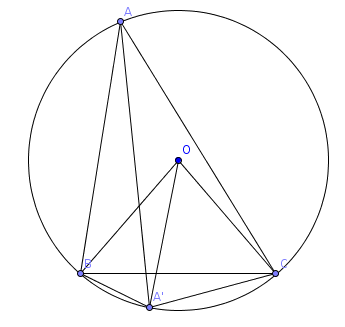

| Choisissez votre langue ! | Choose your language ! |
Nous avons déjà donné la définition des cercles et de leurs tangentes dans .
Positions relatives d'une droite et d'un cercle
We have already given the definition of circles and their tangents in .
Relative positions of a line and a circle
propriété 1
Pour une droite et une cercle dans un même plan il n'y a que 3 possibilités.
- La droite est sécante au cercle (2 points d'intersection).
- La droite est tangente au cercle (un point d'intersection).
- La droite et le cercle ne se rencontrent pas.
- Si cette distance est strictement inférieure au rayon, la droite est sécante.
- Si cette distance est égale au rayon elle est tangente.
- Si cette distance est strictement supérieure au rayon elle ne rencontre pas le cercle.
property 1
For a line and a circle in the same plane there are only 3 possibilities.
- The line intersects the circle (2 points of intersection).
- The line is tangent to the circle (a point of intersection).
- The line and the circle do not meet.
- If this distance is strictly less than the radius, the line is secant.
- If this distance is equal to the radius it is tangent.
- If this distance is strictly greater than the radius, it does not meet the circle.
Il suffit de considérer la H du centre du cercle sur la droite et d'appliquer le théorème de Pythagore.
On constate en outre que :
On constate en outre que :
Just consider the H of the center of the circle on the right and apply the Pythagorean theorem.
It is further observed that:
It is further observed that:
propriété 2
Quand il y a deux points d'intersection, ils sont symétriques par rapport à H.
property 2
When there are two points of intersection, they are symmetric with respect to H.
Voici une appliquette qui vous permet de visualiser ce résultat.
Vous pouvez déplacer le centre A du cercle.
Vous pouvez faire varier le rayon R du cercle avec le curseur.
Vous pouvez déplacer les points B et C, faisant ainsi varier la droite (BC) et sa distance au centre A du cercle.
Le rayon R est affiché, de même que la distance AH.
Les points d'intersection apparaissent quand ils existent.
Vous pouvez déplacer le centre A du cercle.
Vous pouvez faire varier le rayon R du cercle avec le curseur.
Vous pouvez déplacer les points B et C, faisant ainsi varier la droite (BC) et sa distance au centre A du cercle.
Le rayon R est affiché, de même que la distance AH.
Les points d'intersection apparaissent quand ils existent.
Here is an applet that allows you to visualize this result.
You can move the center A of the circle.
You can vary the radius R of the circle with the slider.
You can move points B and C, thus varying the line (BC) and its distance from the center A of the circle.
The radius R is displayed, as well as the distance AH.
Intersection points appear when they exist.
You can move the center A of the circle.
You can vary the radius R of the circle with the slider.
You can move points B and C, thus varying the line (BC) and its distance from the center A of the circle.
The radius R is displayed, as well as the distance AH.
Intersection points appear when they exist.
Positions relatives de deux cercles
Soient C1 et C2 deux cercles du plan, non concentriques et soient A et B leurs centres respectifs, R1 et R2 leurs rayons, Δ la droite (AB) et d la distance AB.On suppose R2 ≥ R1. Dans ces conditions :
Relative positions of two circles
Let C1 and C2 be two non-concentric circles of the plane, and let A and B be their respective centers, R1 and R 2 their radii, Δ the line (AB) and d the distance AB.Assume R2 ≥ R1. In these conditions :
propriété 3
Δ est un axe de symétrie pour la figure C1 ∪ C2.C1 et C2 ne se coupent pas si d > r1+r2 ou d <r2-r1.
C1 et C2 ont un seul point commun I si d=R1+R2 ou d=R2-R1 et les cercles ont même tangente en I.
Dans tous les autres cas C1 et C2 se coupent en 2 points I et J et la droite (IJ) est orthogonale à (AB).
property 3
Δ is an axis of symmetry (mirror) for the figure C1 ∪ C2.C1 and C2 do not intersect if d > r1+r2 or d <r2-r1.
C1 and C2 have a single point in common I if d=R1+R2 or d= R2-R1 and circles have same tangent in I.
In all the other cases C1 and C2 intersect in 2 points I and J and the line (IJ) is orthogonal to (AB).
La preuve est immédiate.
Vous pouvez à l'aide de l'applet suivante explorer tous les cas de figure :
Déplacez les cercles en déplaçant leurs centres.
Faite varier les rayons au moyen des curseurs.
La distance AB est affichée ainsi que les rayons.
Vous pouvez à l'aide de l'applet suivante explorer tous les cas de figure :
Déplacez les cercles en déplaçant leurs centres.
Faite varier les rayons au moyen des curseurs.
La distance AB est affichée ainsi que les rayons.
The proof is immediate.
You can use the following applet to explore all scenarios:
Move the circles by moving their centers.
Vary the radii using the sliders.
The AB distance is displayed as well as the radii.
You can use the following applet to explore all scenarios:
Move the circles by moving their centers.
Vary the radii using the sliders.
The AB distance is displayed as well as the radii.
Equations en repère orthonormé
Equations in orthonormal frame
propriété 4
Dans un repère orthonormé l'équation du cercle de centre A(a,b) et de rayon r est
(x-a)2+(y-b)2=r2.
property 4
In an orthonormal frame the equation of the circle with center A(a,b) and radius r is
(x-a)2+(y-b)2=r2.
Cela provient du fait que M ∈ C ⇔ MA=r ⇔ MA2=r2.
This is because M ∈ C ⇔ MA=r ⇔ MA2=r2.
propriété 5
L'équation de la tangente en M0(x0,y0) au cercle de centre A(a,b) et de rayon r est
(x-a)(x0-a)+(y-b)(y0-b)=r2.
property 5
The equation of the tangent at M0(x0,y0) to the circle with center A(a,b) and radius r is
(x-a)(x0-a)+(y-b)(y0-b)=r2.
Cela s'obtient en écrivant que si M est sur la tangente, le vecteur
\(
\displaystyle \overrightarrow{MM_{0}}
\)
est orthogonal au vecteur
\(
\displaystyle \overrightarrow{AM_{0}}
\)
.
Avec l'appliquette suivante, vous pouvez :
Avec l'appliquette suivante, vous pouvez :
- Déplacer le centre A du cercle
- Faire varier le rayon r au moyen du curseur
- Déplacer le point M sur le cercle
- L'équation du cercle en bleu
- L'équation de la tangente en M au cercle en marron
This is obtained by writing that if M is on the tangent, the vector
\(
\displaystyle \overrightarrow{MM_{0}}
\)
is orthogonal to the vector
\(
\displaystyle \overrightarrow{AM_{0}}
\)
.
With the following applet, you can:
With the following applet, you can:
- Move center A of circle
- Vary the radius r using the slider
- Move point M on circle
- The equation of the circle in blue
- The equation of the tangent in M to the circle in brown
Angles inscrits
Nous allons maintenant énoncer et démontrer un théorème important.Développons auparavant quelques préliminaires.
Inscribed angles
We will now state and prove an important theorem.Let us first develop some preliminaries.
définition 1
Un segment dont les deux extrêmités appartiennent à un même cercle, s'appelle une 'corde' de ce cercle.
definition 1
A segment whose two extremities belong to the same circle, is called a 'chord' of this circle.
définition 2
En particulier, les 'diamètres' sont les cordes qui passent par le centre du cercle.
definition 2
In particular, the 'diameters' are the chords that pass through the center of the circle.
définition 3
Toutes corde délimite deux portions de cercle situées de part et d'autre de la droite support de la corde. On les appelle les 'arcs' sous-tendus par la corde.
definition 3
Every chord delimits two portions of a circle located on either side of the line supporting the chord. These are called the 'arcs' subtended by the chord.
définition 4
Une corde qui n'est pas un diamètre détermine donc deux arcs distincts, un 'grand' arc et un 'petit' arc.Le grand arc est caractérisé par le fait qu'il se trouve du même côté de la corde que le centre du cercle, le petit est l'autre.
definition 4
A chord that is not a diameter therefore determines two distinct arcs, a 'large' arc and a 'small' arc.The large arc is characterized by being on the same side of the string as the center of the circle, the small one is the other.
définition 5
Un 'angle inscrit' dans un cercle est un angle dont le sommet est un point du cercle.Un 'angle au centre' est un angle dont le sommet est le centre du cercle.
definition 5
An 'inscribed angle' in a circle is an angle whose vertex is a point on the circle.An 'angle at the center' is an angle whose vertex is the center of the circle.
On s'intéresse à la figure suivante, ou on a un cercle et une corde [BC] qui n'est pas un diamètre.
Un point A est choisi au hasard sur le grand arc \( \displaystyle \stackrel \frown {BC} \) .
On considère l'angle géométrique (non orienté) déterminé par les demi-droites [AB) et [AC) et on désigne sa mesure par α.
On désigne par β la mesure de l'angle au centre qui intercepte la corde [BC]. Alors nous avons le résultat suivant :
Un point A est choisi au hasard sur le grand arc \( \displaystyle \stackrel \frown {BC} \) .
On considère l'angle géométrique (non orienté) déterminé par les demi-droites [AB) et [AC) et on désigne sa mesure par α.
On désigne par β la mesure de l'angle au centre qui intercepte la corde [BC]. Alors nous avons le résultat suivant :
We are interested in the following figure, where we have a circle and a chord [BC] which is not a diameter.
A point A is randomly chosen on the large arc \( \displaystyle \stackrel \frown {BC} \) .
We consider the geometric angle (not oriented) determined by the half-lines (rays) [AB) and [AC) and we denote its measure by α.
We denote by β the measure of the central angle that intercepts the chord [BC]. So we have the following result:
A point A is randomly chosen on the large arc \( \displaystyle \stackrel \frown {BC} \) .
We consider the geometric angle (not oriented) determined by the half-lines (rays) [AB) and [AC) and we denote its measure by α.
We denote by β the measure of the central angle that intercepts the chord [BC]. So we have the following result:
théorème 1
Le nombre α ne dépend pas de la position de A sur le grand arc
\(
\displaystyle \stackrel \frown {BC}
\)
, sa valeur est égale à β/2.En outre α est égal à la mesure de l'angle (non orienté) que fait la droite (BC) avec la tangente au cercle en chacun des points B et C.
Si A' est un point quelconque du petit arc \( \displaystyle \stackrel \frown {BC} \) l'angle inscrit de sommet A' interceptant la corde [BC] a pour mesure π-α
theorem 1
The number α does not depend on the position of A on the large arc
\(
\displaystyle \stackrel \frown {BC}
\)
, its value is equal to β/2.Additionally α is equal to the measure of the angle (not oriented) that the straight line (BC) makes with the tangent to the circle at each of the points B and C.
If A' is any point of the small arc \( \displaystyle \stackrel \frown {BC} \) the inscribed angle of vertex A' intercepting the chord [BC] has measure π-α
Avec l'applet suivante vous pouvez faire tourner le point A sur le cercle et voir ce qui se passe quand :
- A coïncide avec C' ou avec B'
- A est entre B et C' ou bien entre B' et C
- A est entre C' et B'
With the following applet you can rotate point A on the circle and see what happens when:
- A coincides with C' or with B'
- A is between B and C' or between B' and C
- A is between C' and B'
démonstration
La base de notre raisonnement est la figure ci-dessus.Soit B' le point diamétralement opposé à B et C' le point diamétralement opposé à C.
Si A est en C' ou en B' le théorème est évident car les deux triangles OBC' et OBC sont isocèles, alors que CBC' est rectangle en B.
Si A est sur le petit arc \( \displaystyle \stackrel \frown {B'C'} \) l'angle \( \displaystyle \widehat{BAC} \) est la somme de \( \displaystyle \widehat{ BAA'} \) et de \( \displaystyle \widehat{A'AC} \) , le théorème étant vrai pour chacun d'eux.
Si A est sur le grand arc \( \displaystyle \stackrel \frown {B'C'} \) alors \( \displaystyle \widehat{BAC} \) est la différence de \( \displaystyle \widehat{A'AC} \) et de \( \displaystyle \widehat{A'AB} \) pour lesquels le théorème est vrai.
Ceci démontre donc le premier point du théorème.
L'angle formé par (OC) et la tangente en C est droit, donc l'angle non orienté formé par la droite (OC) et la tangente en C est droit.
Il en résulte que cet angle est complémentaire à l'angle \( \displaystyle \widehat{BCO} \) lequel vaut la moitié de π-β d'où la seconde partie du théorème.
Pour le dernier point, considérer la figure suivante :

Il suffit d'appliquer le résultat précédent aux angles \( \displaystyle \widehat{BAA'} \) et \( \displaystyle \widehat{A'AC} \) et d'utiliser le fait que les triangles OBA' et OA'C sont isocèles.
proof
The basis of our reasoning is the figure above.Let B' be the diametrically opposite point to B and C' the diametrically opposite point to C.
If A is in C' or in B' the theorem is obvious because the two triangles OBC' and OBC are isosceles, whereas CBC' is right-angled in B.
If A is on the small arc \( \displaystyle \stackrel \frown {B'C'} \) the angle \( \displaystyle \widehat{BAC} \) is the sum of \( \displaystyle \widehat{BAA'} \) and \( \displaystyle \widehat{A'AC} \) , the theorem being true for each of them.
If A is on the long arc \( \displaystyle \stackrel \frown {B'C'} \) then \( \displaystyle \widehat{BAC} \) is the difference of \( \displaystyle \widehat{A'AC} \) and \( \displaystyle \widehat{A'AB} \) for which the theorem is true.
So this demonstrates the first point of the theorem.
The angle formed by (OC) and the tangent at C is right, so the undirected angle formed by the line (OC) and the tangent at C is right.
It follows that this angle is complementary to the angle \( \displaystyle \widehat{BCO} \) which is half of π-β hence the second part of the theorem.
For the last point, consider the following figure:
Just apply the previous result to the angles \( \displaystyle \widehat{BAA'} \) and \( \displaystyle \widehat{A'AC} \) and to use the fact that the triangles OBA' and OA'C are isosceles.
Remarquons tout de suite que :
Note immediately that:
théorème 2
Le résultat ci-dessus reste vrai quand [BC] est un diamètre, sa démonstration étant alors immédiate (voir par exemple ).
theorem 2
The above result remains true when [BC] is a diameter, its demonstration then being immediate (see for example ).
Puissance d'un point par rapport à un cercle
Power of a point with respect to a circle
théorème 3
Soit Γ un cercle et A un point quelconque du plan.On mène depuis A une secante au cercle coupant le cercle en B et C.
Alors le produit AB×AC ne dépend que de A et de Γ et est encore egal à AT2 où T est le point de contact de C avec une tangente à Γ issue de A (dans le cas où A est extérieur à Γ).
theorem 3
Let Γ a circle and A any point of the plane.We lead from A a secant to the circle intersecting the circle in B and C.
Then the product AB×AC depends only on A and on Γ and is still equal to AT2 where T is the point of contact of C with a tangent to Γ issued from A (in the case where A is outside Γ).
Avec l'appliquette suivante vous pouvez :
- Avec le curseur faire varier le rayon du cercle.
- Déplacer le point A n'importe où dans le plan
- faire tourner le point B sur le cercle
With the following applet you can:
- With the slider vary the radius of the circle.
- Move point A anywhere in the plane
- rotate point B on the circle
démonstration
Soit O le centre du cercle Γ.La droite (AO) coupe le cercle en deux points E et F diamètralement opposés.
Il suffit de montrer que AE×AF=AB×AC.
Considérons les deux triangles AEB et ACF.
Il ont en commun l'angle \( \displaystyle \widehat{A} \) .
Par ailleurs \( \displaystyle \widehat{EFC} \) =π- \( \displaystyle \widehat{EBC} \) car les deux angles interceptent la même corde [EC] avec chacun leurs sommets sur le cercle Γ sur des arcs opposés par rapport à [EC].
D'où \( \displaystyle \widehat{ABE} \) = \( \displaystyle \widehat{AFC} \) .
Il en résulte que les deux triangles sont .
En écrivant de deux manières les rapports de similitude nous avons :
\( \displaystyle \frac{AB}{AF} = \frac{AE}{AC} \)
qui nous donne l'égalité cherchée.Dans le cas où A est extérieur les triangles ATF et ATE sont également semblables en vertu du théorème sur les angles inscrits.
proof
Let O be the center of the circle Γ.The line (AO) intersects the circle in two diametrically opposite points E and F.
Just show that AE×AF=AB×AC.
Consider the two triangles AEB and ACF.
They have in common the angle \( \displaystyle \widehat{A} \) .
Moreover \( \displaystyle \widehat{EFC} \) =π- \( \displaystyle \widehat{EBC} \) because the two angles intercept the same chord [EC] with each their vertices on the circle Γ on opposite arcs with respect to [EC].
Hence \( \displaystyle \widehat{ABE} \) = \( \displaystyle \widehat{AFC} \) .
It follows that the two triangles are .
By writing the similarity ratios in two ways, we have:
\( \displaystyle \frac{AB}{AF} = \frac{AE}{AC} \)
which gives us the desired equality.In the case where A is exterior the triangles ATF and ATE are also similar by virtue of the theorem on inscribed angles.
définition 6
Le nombre P(A,Γ) égal à AB×AC quand A est extérieur au cercle et - AB×AC quand A est intérieur à Γ s'appelle la 'puissance de A par rapport à Γ '.
definition 6
The number P(A,Γ) equal to AB×AC when A is outside the circle and - AB×AC when A is inside Γ is called the 'power of A with respect to Γ '.
Il résulte immédiatement de la définition que :
It follows immediately from the definition that:
théorème 4
P(A,Γ) est positif pour A extérieur à ΓP(A,Γ)=0 si et seulement si A ∈ Γ
P(A,Γ) est négatif pour A intérieur à Γ
Les courbes de niveau de A → P(A,Γ) sont des cercles concentriques à Γ.
theorem 4
P(A,Γ) is positive for A outside ΓP(A,Γ)=0 if and only if A ∈ Γ
P(A,Γ) is negative for A inside Γ
The level curves of A → P(A,Γ) are circles concentric to Γ.
En outre le théorème de Pythagore donne :
In addition, the Pythagorean theorem gives:
théorème 5
P(A,Γ)=AO2-r2, si O est le centre du cercle Γ et r son rayon.
theorem 5
P(A,Γ)=AO2-r2, if O is the center of the circle Γ and r its radius.
Création Gilles Dubois - licence CC-BY-SA Created by Gilles Dubois - licence CC-BY-SA |
Septembre 2023 September 2023 |
Version mobile Jquery Mobile Jquery version |
|